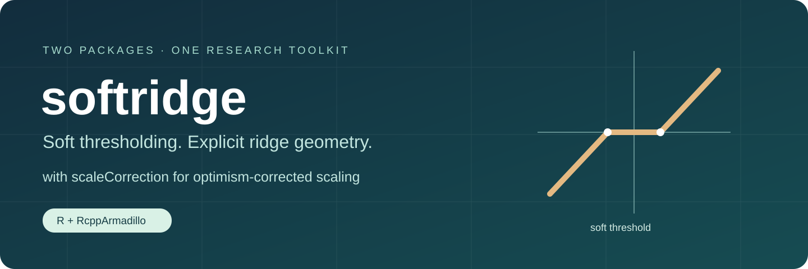

softridge fits soft-thresholded ridge (STR), computes fixed-parameter Gaussian risk and SURE, and supports cross-validation and least-squares refitting. Its scaleCorrection companion fits optimism-corrected scaled STR (SSTR) alongside a matched Ridge-c0 control. Numerical kernels use RcppArmadillo.
Get started · Function reference · Scaling companion · Reproduce the studies
Two packages, complementary roles
| Package | Purpose | Entry points |
|---|---|---|
| softridge | STR fitting, fixed-tuning risk and SURE, CV, LS refitting |
hr(), cv_hr(), hr_risk(), hr_sure()
|
| scaleCorrection | Corrected SSTR and matched Ridge-c0 tuning on a shared CV surface | corrected_pair() |
The manuscript calls the estimators STR and SSTR. Historical function names such as hr() are retained for compatibility. scale = TRUE in hr() or cv_hr() requests the earlier training LS scale (SSTR-LS); the corrected SSTR is obtained from scaleCorrection::corrected_pair().
Install from GitHub
R, a working C++17 toolchain, and the declared package dependencies are required. Install remotes separately if it is not already available, then run:
remotes::install_github("byuzbasi/softridge", upgrade = "never")
remotes::install_github("byuzbasi/softridge", subdir = "companion/scaleCorrection",
upgrade = "never")These are GitHub research packages; no CRAN availability is claimed. Dependency lists and recorded study environments are documented in the guides.
A small STR fit
library(softridge)
set.seed(25)
X <- matrix(rnorm(60 * 100), 60, 100)
beta <- c(2, -1.5, 1, rep(0, 97))
y <- drop(X %*% beta + rnorm(60))
foldid <- rep(1:3, length.out = 60)
grid <- hr_grid(X, y, nk = 3, ng = 5)
fit <- cv_hr(X, y, grid = grid, foldid = foldid)
head(fit$coef)This is a software demonstration, not a simulation performance result. The scaling guide shows the corrected SSTR and its matched Ridge control using the same observations.
Example gallery
Threshold geometry and a fixed-design exact-risk curve are analytic software demonstrations with their seeds and source code stated.
What the theory computes
hr_risk() evaluates coefficient risk for the estimable projection under a fixed Gaussian design model. hr_sure() evaluates fixed-design prediction risk with fixed tuning and known error variance. New-covariate prediction and recovery of the original coefficient support are distinct objectives. The corrected fitted scale and data-adaptive tuning are assessed empirically; the fixed-parameter unbiasedness formulas do not extend automatically to them.
Reproduction materials
reproduction/ contains source packages, frozen designs/seeds and portable runners for the separately reported 22-setting reference study and 192-scenario independent study. The reference uses the original R softridge 0.4.0; the independent study uses RcppArmadillo softridge 0.3.0.1 and scaleCorrection 0.1.0. Their CV protocols differ and are not pooled. Original archives are retained byte for byte in separate library workflows.
No full study runs automatically. Downloading real data and starting a full numerical rerun both require explicit commands. Saved result tables and manuscript PDFs are distributed separately from this software repository.
Citation and authorship
Software: Mohammad Arashi and Bahadir Yuzbasi. See CITATION.cff and citation("softridge") / citation("scaleCorrection").
Companion manuscript: Bahadir Yuzbasi and Mohammad Arashi, Soft-thresholded ridge estimation of an estimable projection, unpublished manuscript (2026). No journal acceptance or DOI is claimed.
Development and validation
See VALIDATION.md, CONTRIBUTING.md, and release notes. Report reproducible problems through GitHub issues. Both packages use GPL (>= 2); original authorship is preserved.